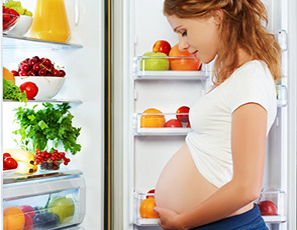

Descripcion
Segun la OMS"la salud es un estado completo de bienastar físico,
mental y social, y no solamente la ausencia de afecciones o enfermedades", sin embargo
la salud tiene muchos factores que interviene en la calidad de vida de cada individuo.
- Seguir una dieta saludable y equilibrada
- Realizar ejercicio de manera regular
- Evitar el consumo de sustancias tóxicas o aditvias.
- Realizar las revisiones médicas o controlar posibles complicaciones.
Por otro lado, es vitable cuidar de la salud ya que abarca el aspecto psicológico y
las emociones. Se debe tomar una actitud positiva ante la vida y evitar situaciones de
estrés son aspectos que no se deben perder y que nos ayuda a mejorar nuestra salud.
Alimentación durante el embarazo

Comer bien durante el embarazo no solo significa comer más. También debes considerar lo que comes.
Solo necesitas unas 340 a 450 calorías adicionales por día - y esto es para la etapa más avanzada del embarazo, cuando tu bebé crece
más rápidamente. Estas no son muchas calorías (una taza de cereales y leche descremada al 2%). Es importante que las calorías provengan
de alimentos nutritivos para que puedan contribuir al desarrollo y crecimiento del bebé.
Cuando tú estás embarazada, lo que comes es la fuente primordial de la nutrición de tu bebé. De hecho, el vínculo entre lo que tu consumes
y la salud de tu bebé es hoy mucho más fuerte de lo que una vez se pensó. Por ello los médicos ahora dicen, por ejemplo, que no se debe
tomar nada de alcohol durante el embarazo.
Alimentos durante el embarazo
| Grupos Alimentos |
Dieta en calorias |
|
1600 |
2200 |
2800 |
| Cerelaes |
6 porciones |
9 porciones |
11 porciones |
| Verduras |
3 porciones |
4 porciones |
5 porciones |
| Frutas |
2 porciones |
3 porciones |
4 porciones |
| Lacteos |
3 porciones |
3 porciones |
3 porciones |
| carnes |
6 porciones |
6 porciones |
7 porciones |